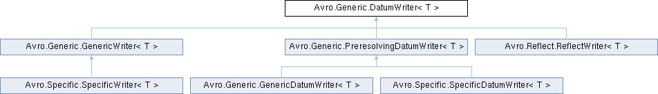

- Generated by
 1.15.0
1.15.0
|
Avro C#
|
Defines the interface for an object that writes data of a schema. More...

Public Member Functions | |
| void | Write (T datum, Encoder encoder) |
| Write a datum. Traverse the schema, depth first, writing each leaf value in the schema from the datum to the output. | |
Properties | |
| Schema | Schema [get] |
| Schema used to write the data. | |
Defines the interface for an object that writes data of a schema.
| T | Type of the in-memory data representation. |
| void Avro.Generic.DatumWriter< T >.Write | ( | T | datum, |
| Encoder | encoder ) |
Write a datum. Traverse the schema, depth first, writing each leaf value in the schema from the datum to the output.
| datum | Datum to write |
| encoder | Encoder to write to |
Implemented in Avro.Generic.GenericWriter< T >, Avro.Generic.PreresolvingDatumWriter< T >, and Avro.Reflect.ReflectWriter< T >.
|
get |
Schema used to write the data.
Implemented in Avro.Generic.GenericWriter< T >, Avro.Generic.PreresolvingDatumWriter< T >, and Avro.Reflect.ReflectWriter< T >.